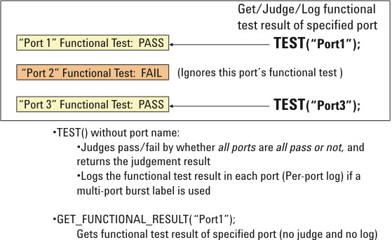

Retrieving, Judging, and Logging Digital Functional Test Result
In the per-port digital functional tests of a multi-port test, the test result of the specified port can be retrieved, judged, and logged. To do this, specify the port name in the TEST API.
If you omit the port name in the TEST API, the TEST API judges pass/fail by whether the per-port digital functional test results in the multi-port test are all pass or not. Even in this case, all per-port test results are logged if the multi-port test uses a multi-port burst label as the start label.
To retrieve a digital functional test result without judging and logging it, use the GET_FUNCTIONAL_RESULT API, where you can specify a port name also.

To log the test results by the TEST API, activate the log_events_enable system flag and either or both of the testsuite flags Output on pass and Output on fail, even in the multi-port test. To log the pass/fail result for each pin, activate either or both of the testsuite flags Per pin on pass and Per pin on fail.